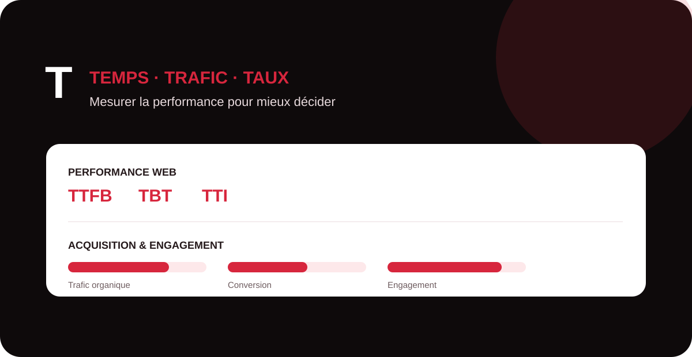

La lettre T réunit des notions techniques, analytics, publicitaires et SEO qui servent à comprendre la qualité d’une expérience digitale. Ce guide MinoSeo distingue les métriques de performance web, les indicateurs marketing et les scores tiers afin de les utiliser sans confusion.

TTI (Time To Interactive)
Le Time To Interactive (TTI) est une ancienne métrique de performance qui estimait le temps nécessaire avant qu’une page devienne pleinement interactive. Elle cherchait à repérer le moment où le contenu principal était affiché, où les gestionnaires d’événements étaient enregistrés et où le thread principal pouvait répondre rapidement aux interactions.
Le TTI reste utile pour comprendre l’histoire de la mesure de performance, mais il ne fait plus partie des Core Web Vitals actuels. Pour piloter l’expérience réelle, privilégiez notamment LCP, INP et CLS, complétés par des métriques de laboratoire comme le Total Blocking Time.
Taux de retention
Le taux de rétention mesure la proportion d’utilisateurs ou de clients qui reviennent, restent actifs ou continuent d’utiliser une offre pendant une période donnée. Sa formule dépend du contexte : SaaS, e-commerce, application, média ou contenu.
En SEO et GEO, la rétention ne mesure pas directement un classement. Elle indique plutôt si le trafic acquis trouve suffisamment de valeur pour revenir. Une stratégie de contenu cohérente, une newsletter, des ressources récurrentes et une expérience fluide peuvent soutenir cette fidélisation.
Total Blocking Time
Le Total Blocking Time (TBT) est une métrique de laboratoire qui additionne les portions de tâches longues pendant lesquelles le thread principal est bloqué et ne peut pas répondre rapidement à l’utilisateur. Un JavaScript lourd, des scripts tiers excessifs ou de longues tâches de calcul peuvent augmenter ce temps.
Le TBT sert surtout au diagnostic technique. Réduire le JavaScript inutile, découper les longues tâches et différer les scripts non essentiels améliore généralement la réactivité. Il ne faut pas le confondre avec l’INP, qui est un Core Web Vital mesuré sur les interactions utilisateur.
taux d’engagement
Le taux d’engagement mesure la part de visites considérées comme engagées selon la définition de l’outil analytics utilisé. Dans GA4, il s’appuie sur les sessions engagées et doit être interprété avec le contexte du site, de la page et de l’objectif commercial.
Un bon taux d’engagement peut indiquer que la promesse du résultat de recherche et le contenu de la page sont cohérents. Il ne constitue toutefois pas un facteur SEO isolé : analysez-le avec les conversions, le trafic qualifié, les requêtes et le parcours utilisateur.
Taux de sortie
Le taux de sortie indique la fréquence à laquelle une page constitue la dernière page consultée d’un parcours. Une sortie n’est pas automatiquement négative : elle peut être normale sur une page de confirmation, une fiche contact ou un contenu qui répond complètement à la question.
L’analyse devient utile lorsqu’une page stratégique présente des sorties anormalement élevées avant une action attendue. Vérifiez alors les appels à l’action, la navigation, les erreurs, la vitesse, le message et la continuité du parcours.
TTFB Time To First Byte
Le Time To First Byte (TTFB) mesure le délai entre la demande d’une ressource et la réception du premier octet de la réponse. Il dépend notamment du réseau, de la négociation de connexion, du serveur, du cache et du temps de génération côté back-end.
Un TTFB élevé peut retarder l’affichage du contenu et pénaliser l’expérience globale. Cache serveur, CDN, optimisation des requêtes, hébergement adapté et réduction du travail back-end font partie des leviers à étudier. Le TTFB est une métrique de diagnostic, pas un Core Web Vital à lui seul.
Traffic manager
Un Traffic Manager pilote l’acquisition de trafic digital, souvent sur les canaux payants : Search Ads, Social Ads, display, retargeting ou campagnes programmatiques. Il gère budgets, ciblages, créations, tracking, tests et rentabilité.
Dans une stratégie globale, le Traffic Manager travaille avec le SEO, le contenu et l’analytics. Les données payantes peuvent révéler rapidement des messages ou requêtes performants, tandis que le SEO construit une acquisition organique plus durable.
Trafic organique
Le trafic organique correspond aux visites obtenues depuis les résultats non publicitaires des moteurs de recherche. Il dépend de la visibilité des pages, de la demande, de l’apparence dans les SERP et du taux de clic.
Pour le piloter, ne regardez pas seulement le volume de sessions. Segmentez par page, requête, intention, pays et appareil, puis reliez le trafic aux leads, ventes ou autres conversions. Search Console et l’analytics sont complémentaires pour cette analyse.
Taux d’impression sur réseau de recherche
Le taux d’impression sur le Réseau de Recherche est une métrique Google Ads. Il correspond au nombre d’impressions obtenues divisé par le nombre estimé d’impressions auxquelles l’annonce était éligible.
Ce KPI permet d’évaluer la marge de visibilité d’une campagne payante. Une part perdue peut être liée au budget ou au classement publicitaire. Il ne faut pas confondre ce taux publicitaire avec les impressions organiques mesurées dans Search Console.
Tag marketing
Un tag marketing est un élément de marquage ou de suivi utilisé pour collecter des données et déclencher des mesures : analytics, conversion publicitaire, remarketing ou événements. Il peut être déployé directement dans le code ou via un gestionnaire de balises.
Un plan de taggage propre améliore la fiabilité du pilotage. Documentez les événements, évitez les doublons, contrôlez le consentement et vérifiez régulièrement que les balises se déclenchent au bon moment sans dégrader inutilement les performances.
taux de rebond
Le taux de rebond représente traditionnellement la proportion de visites qui se terminent sans interaction supplémentaire. Dans GA4, sa définition est liée aux sessions non engagées : il constitue le complément du taux d’engagement.
Un rebond élevé n’est pas toujours mauvais, notamment lorsqu’une page répond immédiatement à une question. Il faut l’interpréter selon l’intention, le type de page, les conversions et les autres signaux d’engagement.
taux de conversion
Le taux de conversion mesure la proportion de visiteurs, sessions ou utilisateurs qui accomplissent une action cible : achat, demande de devis, inscription, appel ou téléchargement. La formule doit toujours préciser le dénominateur choisi.
En SEO, augmenter le trafic sans améliorer les conversions peut limiter la valeur business. Travaillez la correspondance intention–page, les preuves de confiance, la clarté de l’offre, les formulaires, les CTA et les points de friction.
Trust Flow
Le Trust Flow est une métrique propriétaire de Majestic utilisée pour apprécier la proximité d’un profil de liens avec des sites considérés comme fiables dans son index. Il s’agit d’un indicateur tiers, pas d’une métrique Google.
Utilisez-le comme un signal comparatif parmi d’autres : pertinence thématique, qualité éditoriale, trafic réel, contexte du lien et diversité du profil comptent davantage qu’une note isolée. Aucun score tiers ne garantit un meilleur positionnement Google.
Tableau de synthèse : les indicateurs en T
| Notion | Catégorie | Usage principal |
|---|---|---|
| TTI, TBT, TTFB | Performance web | Diagnostiquer chargement et réactivité. |
| Engagement, rebond, sortie, rétention | Analytics / UX | Comprendre la qualité des visites et des parcours. |
| Trafic organique, conversion | SEO / business | Relier visibilité et résultats commerciaux. |
| Taux d’impression Search | Google Ads | Mesurer la part de visibilité publicitaire éligible. |
| Trust Flow | Netlinking / métrique tierce | Comparer des profils de liens sans l’assimiler à un score Google. |
Transformez vos données en décisions SEO et GEO
MinoSeo associe audit technique, SEO, GEO, contenu et analyse de performance pour améliorer votre visibilité et la valeur générée par votre site.
Demander un audit gratuit